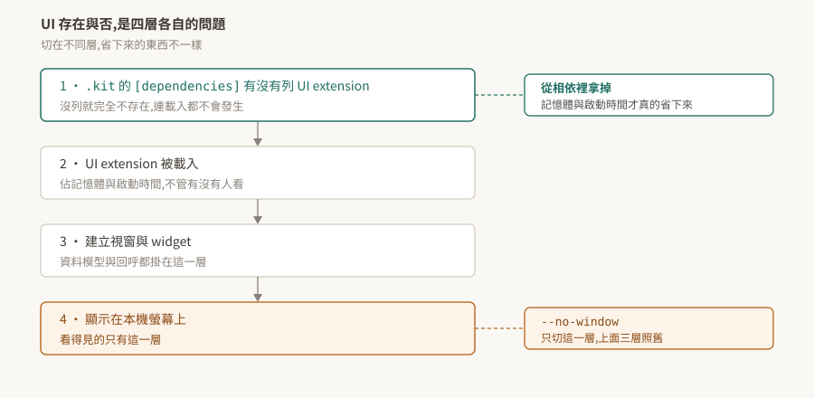

09 · omni.ui:UI 是 extension 提供的,所以它的有無是相依問題
「headless 的時候 UI 就不存在了吧」——這句話對了一半,而錯的那一半有實際成本。
UI 由 extension 提供,所以它存在與否由 .kit 的相依決定;而 --no-window 動的是最後一層。兩者省下來的東西不一樣。

驗證狀態:§1、§2 引用官方逐字。本 repo 沒有 Kit 環境,§3、§4 是從機制推的,未實機驗證,驗法在 §5。
1. 什麼是 omni.ui
官方的定義:
"The Omniverse UI Framework is the UI toolkit for creating beautiful and flexible graphical user interfaces in the Kit extensions."
注意最後三個字——in the Kit extensions。這不是一個獨立的 UI 函式庫,它是給 extension 用來長出介面的工具。這句話直接決定了 §3。
它提供基本 UI 元件與一套排版系統,元件都支援樣式覆寫。
2. MDV:資料與顯示分開
"The widgets follow the Model-Delegate-View (MDV) pattern which highlights a separation between the data and the display logic."
Model 是資料、View 是顯示、Delegate 決定怎麼畫。分開的理由是同一份資料要能有多種呈現,而且改呈現不該動到資料。
實務上的意義:資料模型可以獨立於顯示存在。這一點在 §4 會再出現——沒有視窗不代表模型與回呼那一層不見了。
官方提供兩個互動式的示範 extension,omni.example.ui 展示元件與排版怎麼組合,omni.kit.documentation.ui.style 展示樣式系統。要學的話從這兩個進去比讀 API 文件快。
3. UI 的存在是相依問題
既然 UI 由 extension 提供,那麼「這個應用有沒有 UI」就跟「有沒有 UI extension 被拉進來」是同一個問題(02)。
拆成四層來看,切在不同層省下來的東西不同:
| 層 | 這一層決定什麼 | 怎麼切 |
|---|---|---|
| 1 | UI extension 在不在相依樹上 | 從 .kit 的 [dependencies] 拿掉 |
| 2 | 有沒有被載入(佔記憶體與啟動時間) | 同上,第 1 層決定 |
| 3 | 有沒有建立視窗與 widget | 由 extension 自己的邏輯決定 |
| 4 | 有沒有畫到本機螢幕 | --no-window |
--no-window 切的是第 4 層。 前面三層照舊:extension 載了、記憶體佔了、啟動時間花了、視窗物件可能也建了,只是沒有畫出來。
要真的省下那些,得動第 1 層——把 UI extension 從應用的相依裡拿掉,做一個本來就不含 UI 的 .kit。這也是為什麼同一套 SDK 底下會有「full」與比較精簡的多個 experience 檔(01 §3)。
4. headless 下省不省得到
接 06 §6 那條推論,現在可以講得更精確:
- 想省顯示:
--no-window就夠了。 - 想省記憶體與啟動時間:要換一個不含 UI extension 的
.kit檔。 - 想省GPU:兩個都不夠——算圖是另一條路徑,見 06 §2。
三件事三個切點,而它們常被當成同一件事。規劃遠端伺服器的資源時,把要省的是哪一種先講清楚,再決定動哪一層。
以上是從機制推的,本 repo 未實測。 特別是「--no-window 下 UI extension 仍被載入」這條,值得優先驗——它決定了上面那張表能不能拿來做資源規劃。
5. 待驗清單
| # | 待驗的斷言 | 怎麼驗 | 什麼算通過 |
|---|---|---|---|
| 1 | --no-window 下 UI extension 仍在啟用清單裡(§3) |
加該旗標啟動,查 UI 相關 extension 的狀態 | 仍列為啟用 |
| 2 | 從相依拿掉才真的省記憶體(§3) | 三種組態各量一次常駐記憶體與啟動時間:含 UI、含 UI 加 --no-window、不含 UI |
前兩者接近,第三者明顯較低 |
| 3 | 沒有視窗時資料模型仍可用(§2) | 在 --no-window 下建立一個 model 並讀寫 |
讀寫正常 |
| 4 | 不含 UI 的 .kit 能正常啟動(§3) |
寫一個最小的、不列任何 UI extension 的 .kit |
啟動成功,而 UI 相關 API 不存在 |
第 2 條是這篇唯一能落到數字的一條,也是唯一能拿去做資源規劃的一條。做的時候記得量測條件要一起記:Kit 版本、機器、樣本數。